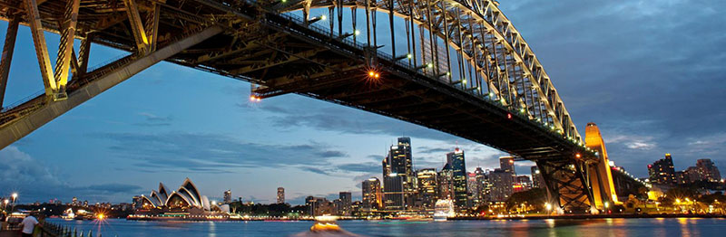

시드니 HISTORY
-
시드니 항구 연안에는 적어도 4만년 전부터 원주민이 정착했다. 시드니라는 이름은 당시 영국의 각료였던 시드니경(卿)의 이름을 딴 것이다.
유럽인의 관심이 이 지역으로 생긴 것은 1770년 제임스 쿡의 포트 잭슨 만의 발견 이후이다. 영국의 아서 필립 선장은 사상 초유의 "화물"을 머나먼 대륙으로 이송해야 했다. 그는 영국에서 추방된 죄수 700명과 선원 450명을 11대의 배에 나눠 싣고 영국에서 오스트레일리아 동쪽 해안까지 7개월간의 항해를 시작했다. 1788년 1월 18일, 11대의 배는 다른 뱃사람들이 배를 정박하기에 좋은 곳이라고 추천해 준 곶(串)에 도착했다.[1] 영국인에 의한 최초의 이주민은 1788년 1월 20일에 아서 필립 총독에 의해 시드니 시내에서 가까운 곳에 호주 최초의 식민지가 건설되었다. 필립은 처음 이 땅을 알비온이라고 부를려고 했지만, 시드니 후미에서 유래한 "시드니"가 일반적으로 이용되게 되었다. 시드니 만은 쿡이 지은 것으로, 그의 후원자였던 시드니 경 (시드니 자작) 토마스 타운젠트의 이름을 딴 것이다. 이것은 식민지 설립을 허가하는 특허장이 시드니 경의 알선으로 교부하였던 것에서 유래한 것으로 보인다.
-
시드니는 오스트레일리아 대륙 남동쪽 기슭의 포토 잭슨 만(시드니항) 및 보타니만에 접하는 항만 도시이다. 사방은 장대한 대자연에 둘러싸여 있어 동쪽으로 태평양, 서쪽으로 블루 마운틴, 북쪽으로 호크스베리카와, 남쪽으로 로열 국립 공원이 있다. 게다가 시드니는 많은 후미나 해안을 가지고 있다. 본다이 비치는 특히 유명한데 시내에서 가까운 포토 잭슨 만은 리아스식 해안으로 세계 최대의 천연의 입강으로 여겨진다. 이와 같이 풍부한 자연이 풍족한 시드니이지만, 자연 재해인 지진은 인체에서는 감지할 수 없는 무감 지진을 제외하고 거의 없다.
-
시드니는 고속도로, 철도, 페리의 광범위한 교통망을 가지고 있다. 시민의 주요 교통 수단은 자동차이다. 이 흐름을 원활하게 하여 도심 교통 체증을 해소하기 위해, 시드니 도심 지역을 환상에 건설한 메트로드도 특히 중요한 도로망이다.